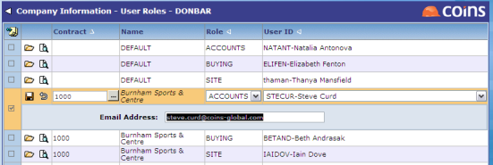

Problem Invoice Workbench - Setup
For the Problem Invoice Workbench to be effective, you must put registered invoices on hold:
- Set PL/DEFHOLD to Y.
- Set PL/DEFHCODE to a valid hold code.
You should also consider putting invoices on hold if there are any problems in invoice matching (otherwise the Problem Invoice Workbenches will not pick up price and quantity queries):
- Set PL/APPRCOST to Y.
- Set PL/DEFHCODI to a valid hold code.
- Set PL/DEFHCODC to a valid hold code.
- Set PO/HLDOKINV to N.
- Set PO/HLDOKCRN to Y (this assumes that if an invoice is on hold because of invoice matching problems, you are waiting for a credit note, so you would want the credit note to be put on hold so the invoice and credit note can be processed at the same time).
You should also consider preventing staff who will give site or buying approval from accessing the Update Invoice function (%WPL1010SAINU).
Invoice matching roles
Set up invoice matching roles using User Roles.

User Roles allows you to specify the users who are responsible for dealing with different types of invoice matching queries. These are used to assign the owner of the invoice on Problem Invoices and Problem Invoices (Accounts).
-
Using the Type selector, select which type of user role (, asset or department) you are going to maintain.
-
Set default users for each role (Accounts, Buying or Site) - leave the (or Asset or Department) field blank. These are the users who will deal with invoices if there is no -specific (or asset-specific or department-specific) user assigned.
-
Then set -specific (or asset-specific or department-specific) users for each role; these are the users who will identify as the owners of problem invoices for that (or asset or department).
assigns invoices with a site or buying query to the owner specified here. However, the accounts role is only consulted when a user specifically refers the invoice to accounts using the workbench; when an invoice is first entered, the owner is the person who entered it.
You only need to set up one user for each role on each . If there is more than one user set up, will pick the first user for the relevant role.